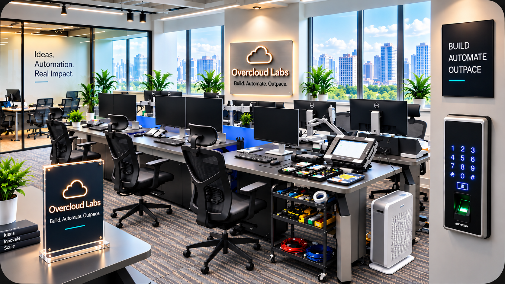

Build. Automate. Outpace.
Overcloud Labs is a digital development and automation studio focused on practical websites, workflows, enquiry systems, payment solutions and content.

We build useful technology, not technology for its own sake.
A website should make it easier for people to understand your business. An automation should remove repetitive work. A lead system should make enquiries easier to manage. Every project starts with that practical objective.
Development + Automation + Content
Combining these capabilities means you can solve several connected parts of your digital workflow with one partner.
How we work.
Understand first
We identify the actual bottleneck before recommending a tool or workflow.
Keep it maintainable
The solution should remain understandable after delivery.
Improve continuously
Digital systems can be refined as your business process changes.
Working from New Delhi.
Serving businesses, professionals and entrepreneurs through remote-first digital delivery.
Build. Automate. Outpace.
That is the operating idea behind Overcloud Labs: build the right digital foundation, automate what should not be manual, and help the business move faster.